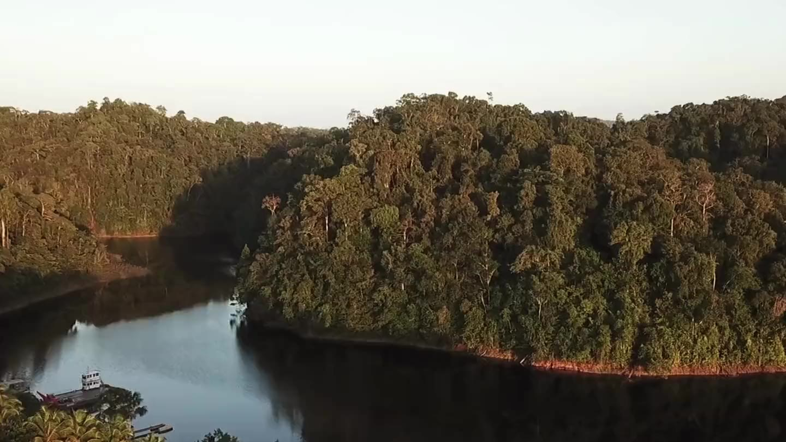
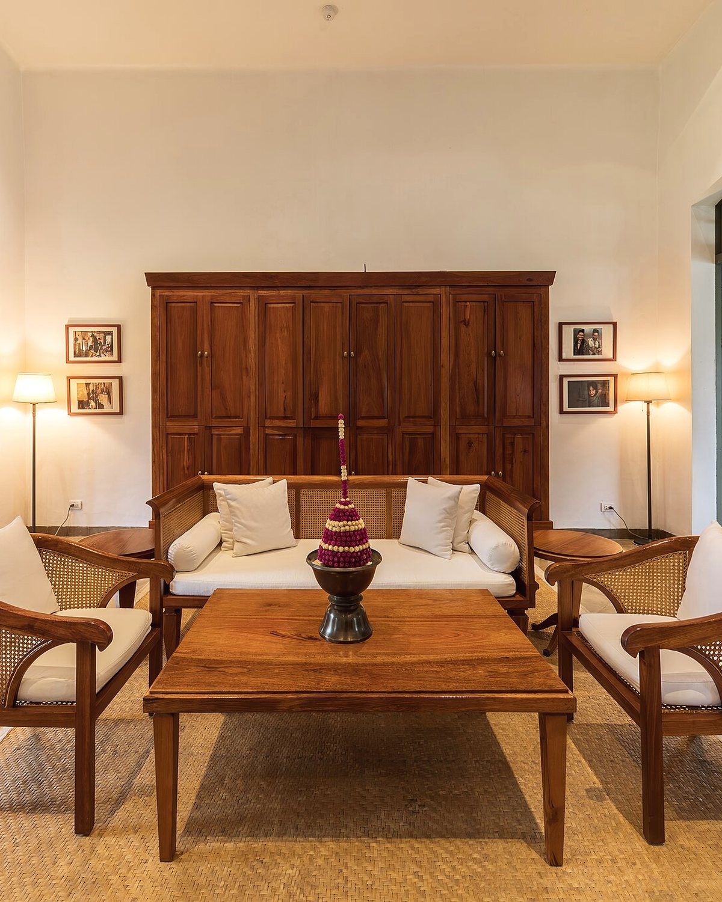
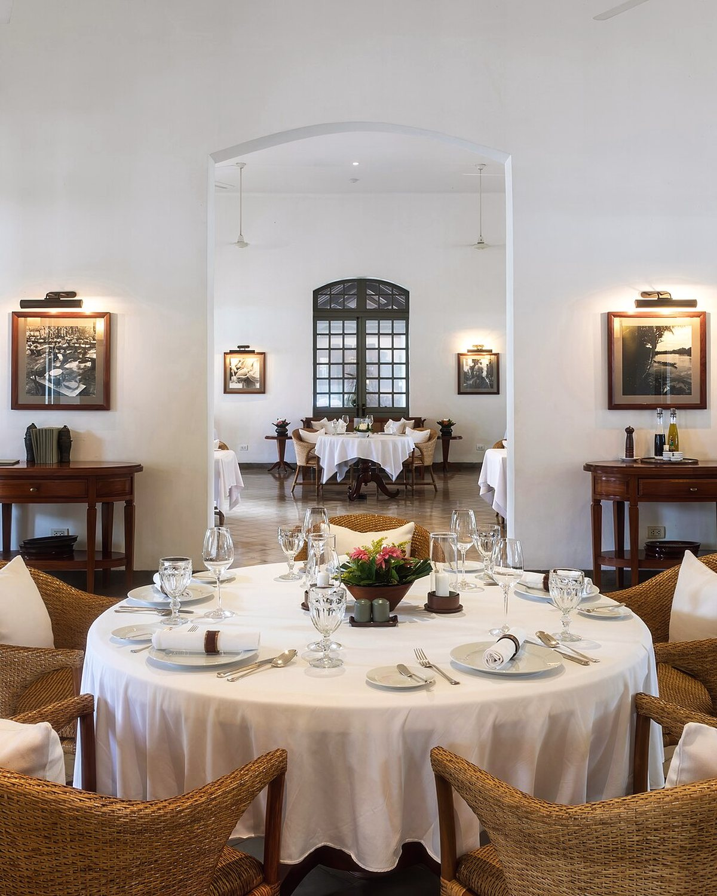

Anse de Montjoly, 97354 Rémire-Montjoly+594 594 00 00 00

5° Nord · Guyane française
Vingt clésentre forêtet Atlantique
Une demeure créole restaurée sur l'anse de Montjoly, adossée à la forêt du Rorota.
Vingt chambres et suites, une table de saison, et l'Amazonie pour horizon.
Bâtie pour un négociant en bois de rose, longtemps abandonnée à la végétation,
la Maison Rorota a retrouvé ses galeries, ses persiennes et ses parquets de wapa
après quatre années de restauration.
Nous avons gardé les volumes, la hauteur sous plafond, la fraîcheur des courants d'air
traversants — et ajouté ce que l'époque réclame : une table qui travaille les produits
du littoral, un spa ouvert sur le jardin, et une conciergerie qui connaît la Guyane
au-delà des cartes postales.
Vingt clés seulement. C'est peu, et c'est volontaire : de quoi vous reconnaître
au petit-déjeuner dès le deuxième matin.
De la chambre sur jardin à la villa avec bassin privé, toutes ouvrent sur l'extérieur
et partagent le même vocabulaire : bois massif, lin lavé, ventilateur au plafond.
8 chambres

Chambre Deluxe Wapa
42 m² · Vue jardin créole
Plain-pied sur le jardin, terrasse privative et hamac.
Forêt primaireTable de saisonTortues luthSpa WassaïÎles du SalutBassin à débordementMarais de KawConciergerieForêt primaireTable de saisonTortues luthSpa WassaïÎles du SalutBassin à débordementMarais de KawConciergerie

La Table de Rorota
Des plats simples,très bien faits
Pas de démonstration. Un poisson pêché le matin à Rémire, un poulet rôti au feu de bois,
des légumes du maraîcher de Matoury — et le temps qu'il faut pour bien les cuire.
Le sentier du Rorota part à dix minutes à pied. Les Îles du Salut sont à une heure de route
et vingt minutes de mer. Entre les deux, il y a un continent de forêt.
Trois cabines, un bassin d'eau froide, un hammam et un sauna. Les soins font appel
au wassaï, au roucou et au beurre de karité — travaillés par une maison de Cayenne.
Massage aux huiles chaudes de Guyane — 60 min, 130 €